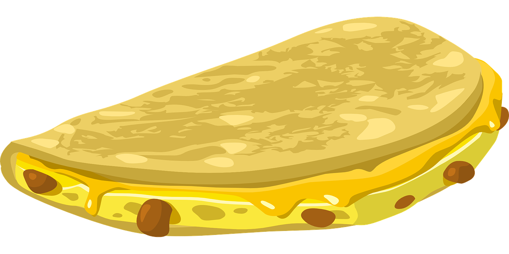

Quesadillas

Description
This is a vegetarian quesadilla recipe that is pretty light on spice.
Ingredients
- tortillas
- 1 can corn
- 1 can black beans
- 1 large onion
- shredded Mexican cheese
- paprika
- garlic powder
- salt
- ground black pepper
Steps
- Dice the onion.
- Mix the onion with the corn and black beans in a big bowl.
- Add all the spices to the mixture, eyeball the quantities.
- Heat up a pan.
-
Lay one tortilla in the pan. Sprinkle shredded cheese over half the
tortilla.
-
On the same half, spoon a thin layer of the onion mixture over the
cheese.
- Add another layer of cheese on the same half.
- Fold the tortilla in half.
-
Once the tortilla is structurally sound enough, flip the quesadilla onto
its other side.
- When both sides are browned, remove the quesadilla.
- Repeat until you have enough quesadillas.